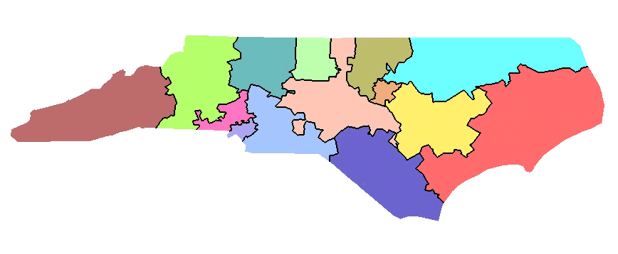
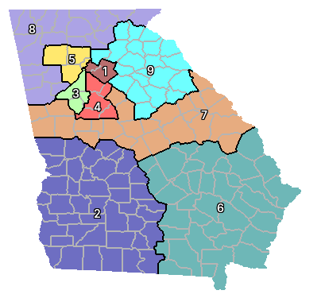
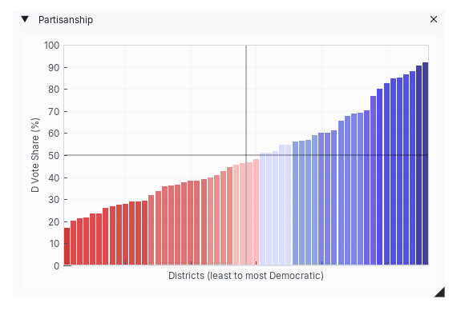
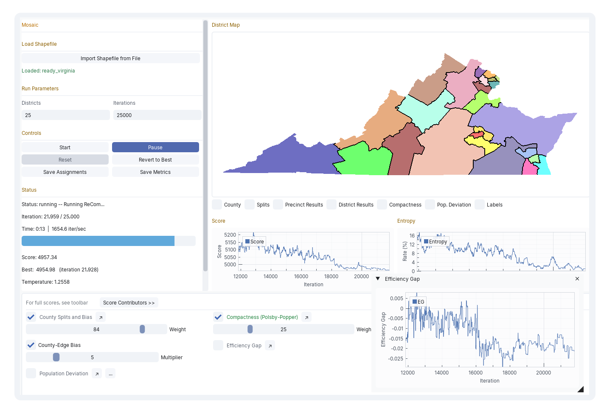

Mosaic is a desktop tool for ReCom + simulated annealing redistricting. Load a shapefile, configure scoring, and watch each iteration redraw the map and update the metrics in real time.
The choropleth redraws each iteration as ReCom merges and re-splits districts.
Compactness, county splits, population deviation, mean-median, efficiency gap, and more.
Save final assignments, score histories, and per-district metrics for further analysis.



Five-minute install on Windows or Mac. No Python knowledge required — a launcher script handles dependencies the first time you run it.
Read the install guide →